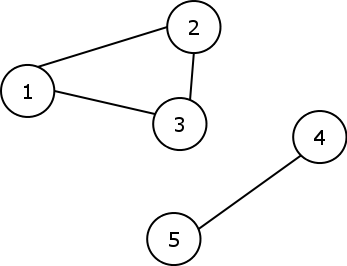
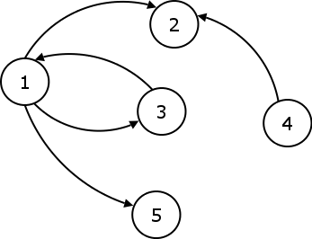

Informații de bază despre grafuri
Definiție
Un graf este o pereche ordonată de mulţimi, notată G=(X,U), unde X={x | x∊ X} este mulţimea nodurilor (vârfurilor) iar U={(x,y)| x, y ∊ X}, mulţimea muchiilor. nod/vârf = element al mulţimii X; poate fi reprezentat în plan printr–un punct (cerc etc.), eventual numerotat. De obicei, un graf este reprezentat în formă schematică ca un set/grup de puncte pentru noduri, iar acestea sunt unite două câte două de linii sau curbe pentru muchii. Grafurile reprezintă unul dintre obiectele de studiu în matematica discretă. Muchiile pot fi orientate/directe sau neorientate/nedirecte. De exemplu, dacă nodurile reprezintă persoane la o petrecere și există o muchie între două astfel de persoane dacă ele-și fac cu mâna, atunci acest graf este neorientat/nedirectat, deoarece orice persoană A poate să agite mâinile spre o persoană B numai dacă B, de asemenea, face cu mâna spre A. În schimb, dacă orice muchie/linie de la o persoană A la o persoană B corespunde admirației față de B a lui A, atunci acest grafic este orientat/directat, deoarece admirația dintre A și B nu este neapărat reciprocă. Forma anterioară a grafului este denumită graf neorientat/nedirectat, iar muchiile sunt numite muchii/linii neorientate/nedirecționate/nedirectate, în timp ce ultimul tip de graf este numit grafic orientat/directat și muchiile sunt numite muchii orientate/directate/direcționate.
Graf neorientat


Graf orientat